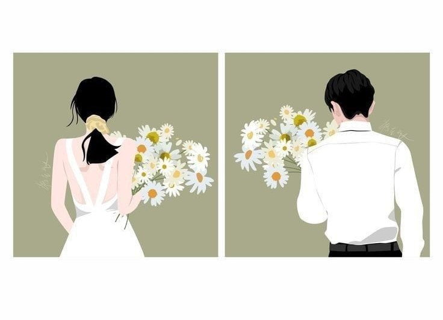

Love Story
-
Awal Pertemuan

Pertama kali kami bertemu dan dikenalkan sebagai teman satu kampus dan kebetulan kami masih memiliki cerita masing-masing
2015 -
Persahabatan
Kedekatan dengan teman-teman kami membuat kami makin sering bertukar cerita satu sama lain dan membuat kami merasa cukupdekat sebagai sahabat yang dapat dipercaya. Tapi harus di pisahkan dengan jarak sehingga kami tak dapat bertukar cerita lagi.
2016 - 2017 -
LDR

Karena jarak yang cukup jauh, kami lama tak bertemu. Namun takdir membuat kami saling berkomunikasi lagi dan bertukar keluh kesah kami masing-masing.
2018 -
Kecocokan

Karena begitu dekatnya, kami saling merasa cocok satu sama lain. Maka kami beranikan untuk mengungkapkan perasaan kami di awal tahun itu.
2019 -
Pengujian

Hari-hari kami lewati bukan tanpa cobaan, terlebih predikat kami yang awalnya “sahabat” tak dapat diterima oleh beberapa orang. Tapi kami terus menjalankan hubungan kami dengan sepenuh hati.
2020 - 2021 -
Keyakinan
Setelah beberapa tahun kami saling kenal, semakin membuat kami yakin satu sama lain untuk melangkah lebih jauh. Sehingga kami yakinkan diri sampai di tahap pelamaran.
2022 - 2023 -
Akhir dan Awal
Akhir dari perjalanan pencarian kami masing-masing sampailah pada tahap kami untuk memulai awal cerita kami bersama sebagai keluarga yang In Syaa Allah kami yakin untuk membangunnya bersama. Semoga langkah kami selalu diberkahi dan diridhakan oleh Allah SWT.
2024